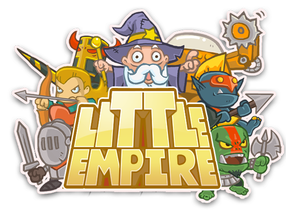

لنجعل الإمبراطورية الصغيرة عظيمة مرة أخرى
مقدمة:
يُعد هذا المشروع خادمًا خاصًا ومستقلًا، تم تطويره خصيصًا لإعادة إحياء لعبة الاستراتيجية الكلاسيكية الشهيرة Little Empire. لقد تم إحياء هذا المشروع بجهود وتكاليف ذاتية كاملة من قِبل مجموعة من المعجبين واللاعبين القدامى الشغوفين باللعبة، والذين أرادوا الحفاظ على إرثها وإتاحتها للجميع مرة أخرى بعد توقف خوادمها الرسمية. يتمثل هدفنا الأساسي في توفير بيئة تقنية مستقرة، آمنة، وقابلة للتطوير المستمر؛ لإعادة الحياة لهذه اللعبة الرائعة وتمكين المجتمع من الاستمتاع بها مجددًا.
المتطلبات:
إصدار نظام التشغيل: تعمل اللعبة على كافة إصدارات نظام أندرويد (Android) دون استثناء، وبغض النظر عن إصدار نظام أندرويد.
معمارية المعالج: يدعم المشروع كافة المعماريات، سواء كانت 64-bit أو 32-bit.
التنزيل:
قريباً
للتواصل والتعاون معنا يرجى الإتصال عبر:
email:
support.littleempire@gmail.com